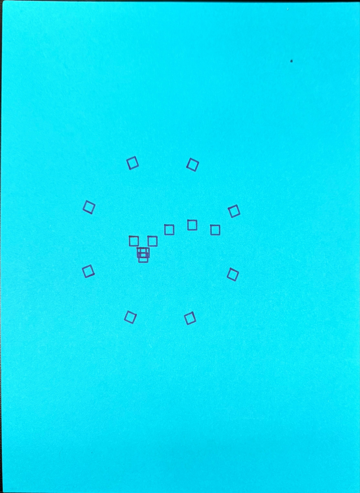

For this week drawings, I used the last week drawings that with two rings, I thought it will be easier for me do understand p5.js system from using a continuesly drawing. So for this week, I add a function for the inner ring I used mouse to control it become to the horizontal row and for the outer ring I just keep what I got from last week. I tried to copy from last week and make it have the drawing first, but the p5.polar.js which is different from last week, so it didn't work. therefore I asked LLM, how do I work for this week p5.js template. As the process of change to fit with this week actually. Finally, I used the p5.Polar library to make the rotation. The function actually very different from last week. I personally think it is like rewrite a new code at all. So I think next time I maybe just start a new one, because I think the work form Vera Molnár that canvas filled with full sqaure are intreseted, I want to try the two layer of sqaure, so that when I use the idraw to draw the drawing I can change the pen color for the second layer.
